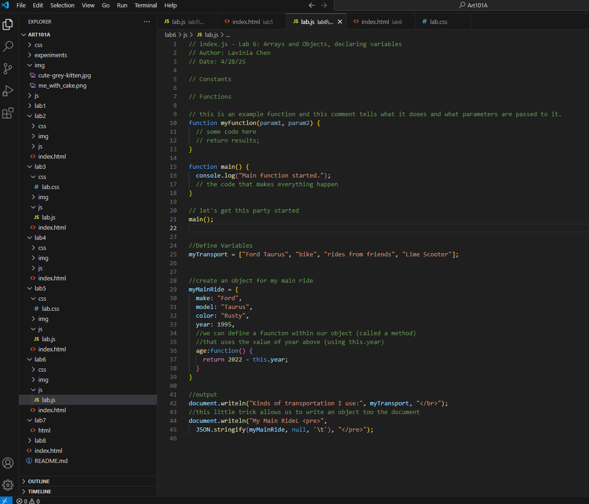
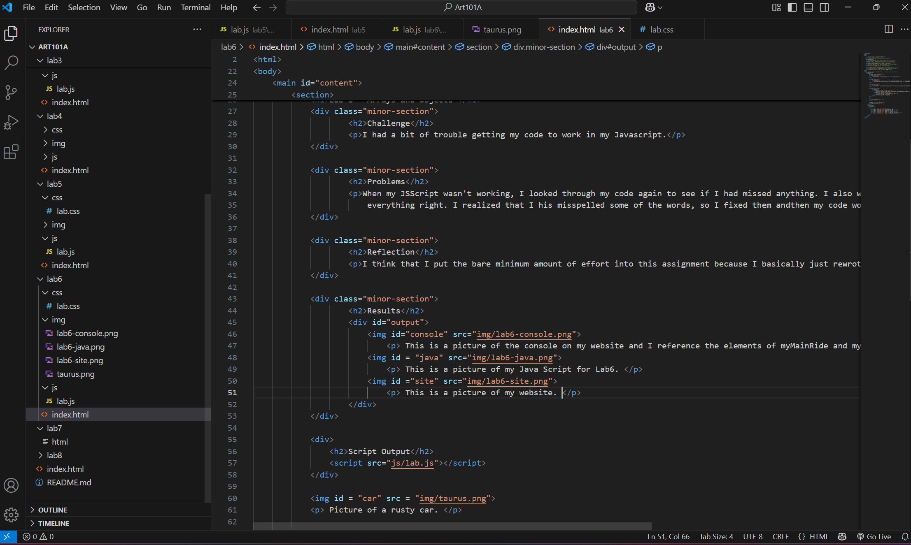
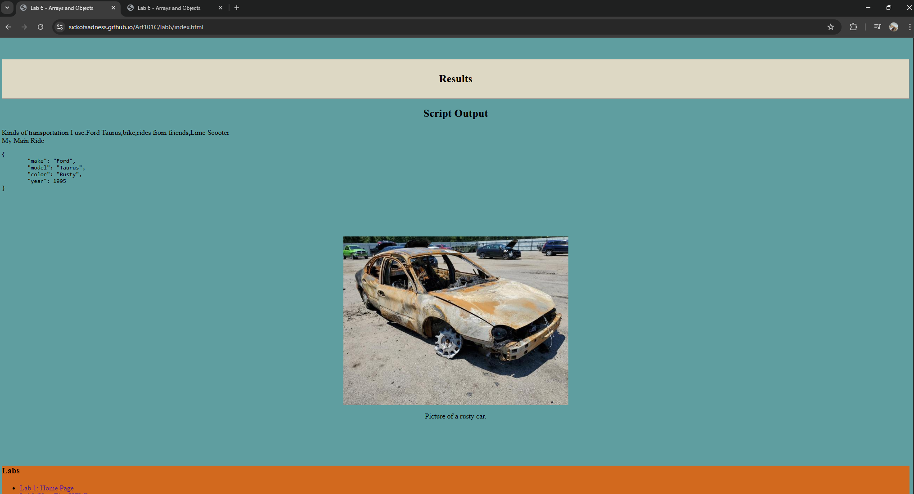

Lab 6 - Arrays and Objects
Challenge
I had a bit of trouble getting my code to work in my Javascript.
Problems
When my JSScript wasn't working, I looked through my code again to see if I had missed anything. I also went through the steps on Cavnas again to see if I did everything right. I realized that I his misspelled some of the words, so I fixed them andthen my code worked.
Reflection
I think that I put the bare minimum amount of effort into this assignment because I basically just rewrote the code that was on Canvas and made sure that it worked.
Results
This is a picture of the console on my website and I reference the elements of myMainRide and my Transport in it.
This is a picture of my Java Script for Lab6.
This is a picture of my HTML.
This is a picture of my website.
Script Output
Picture of a rusty car.